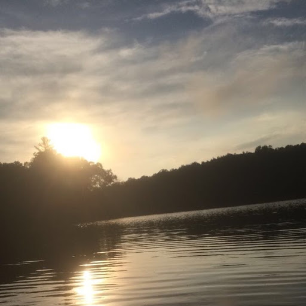

The first place I went to this summer was Chicago. I went there because my Uncle had just moved there and he wanted us to check it out and stuff like that. While we were there we went on the Navy Pier ferris wheel and we ate the famous Chicago style pizza. Also while we were ther ewe found a Rolls Royce, Bentley, and Lamborghini showroom and dealer. We also saw a movie being filmed right across the street from our hotel.

The second place I went to was Crystal Lake in Walhalla. I went with my friend and his family for the 4th of July. It was a really cool lake because it was small so there wasnt a lot of people there on boats and stuff. We also went kayaking and on a bike trail while we were there. I also got a really cool picture while I was kayaking and here it is below.
 By: Kevin Burke